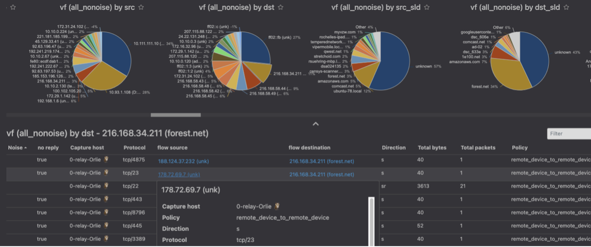
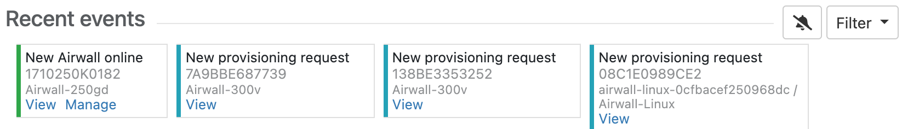
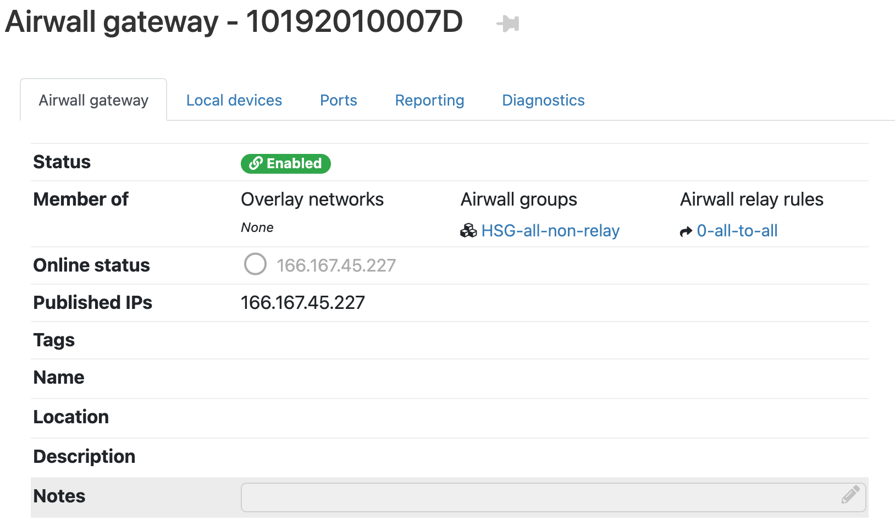

Release Notes 2.2.11
Release Date: Mar 15, 2021
What's New in 2.2.11
Here are the new features and enhancements in this version.
Mirror network traffic for Packet Analyzers
You can now mirror network traffic to packet analyzer/visibility tools (like Nozomi or Wireshark) to see what’s going on in your Airwall secure network.
See more: Mirror traffic from your Airwall Gateways to a packet analyzer tool
Assign Separate DNS Servers to Airwall Agents and Servers
If you need Airwall Agents and Servers to use different DNS servers, you can assign different DNS servers on an Overlay or individually for Airwall Agents and Servers that support it.
See more: Assign Separate DNS Servers to Airwall Agents and Servers
Preview - Airwall Visibility Connector
The Airwall Visibility Connector gives you a dynamic L4 view into the health and status of your Airwall secure network. You can explore many pre-computed reports in the Conductor, and can integrate other threat detection platforms. When configured, the Conductor continuously learns from these external systems, and can report or respond to threats as they are detected.
Contact Customer Success at Customer Success if you would like to preview this feature. A future version will expose the full feature with appropriate documentation, training, and platform options.
New Knowledge Base and Support Site
Tempered has a new site for our product Knowledge Base articles and support. Update your links!
- New Link to open a Support ticket: https://www.tempered.io/support/supportReq.html
- New location for Knowledge Base articles: https://tempered.force.com/TemperedSupportCenter/s/
New and Improved Conductor Features
- Update macOS Airwall Agents from the Conductor
-
In v2.2.11, the macOS Airwall Agent introduces the ability to update from a Conductor package. For those running v2.2.10, upgrade one last time manually, with:
sudo installer -pkg /path/to/Airwall-Mac_2.2.11.xxxx.pkg -target /You can then update future versions from a Conductor update package.
- Clear Recent events on the Dashboard
- On the Dashboard System navigation, you can clear all events by selecting
the Dismiss events icon :

- New Notes field on Airwall Edge Service pages
- There is now a place where administrators can add notes on Airwall Edge Service pages:

- Conductor theme now follows you
- Your Conductor theme is now saved across computers and browsers.
- Failover groups improvement
- Failover groups now start with an initial likely selection for underlay link failover configuration.
- OpenID Connect improvement
- OpenID Connect now supports Azure Active Directory (AD).
- Conductor Certificate Expiration reminders
- When a Conductor certificate is near expiration (1 month + 1 week), you get an event and a tag on the cert info that warns you of the upcoming expiration. On the day of expiration, you get an alert, event, and a tag telling you the certificate has expired.
- Download a CSV with Licensing and Airwall Data
- You can download all licensing and Airwall data in CSV format from . This data can be helpful in ensuring your Conductor vouchers are correctly renewed.
- Access Windows Date Selection improvements
- The way you choose dates for Access windows has been improved.
- Airshell Improvements
- You can now save your network configuration when doing a factory reset using the keep-networking option. See Airshell (airsh) Command Reference.
- Alert Improvements
- Intrusion prevention alerts now indicate which devices are the source or destination of the alert where possible. These alerts are in Conductor alerts and indicated by the ID in the event data from the API , and snort metadata will be included in the API.
- Diagnostic Mode Improvements
-
- Diagnostic Report Addition – The Diagnostic report now includes policy-based routing rules and IPv6 routes.
- Return to Diag mode after a hotfix – When applying a hotfix that does not require reboot, when the hotfix is complete you get an option to return to Diag mode.
- API Improvements
-
- API tracks when changes happened – The Conductor API now serializes when many resources were created and updated, and includes These changes make it easier to see when resources were added or have changed from the API.
- New API endpoints – New API endpoints show history of Airwall Edge Services being managed and revoked , and returns a list of devices that each device has policy to and what overlays the policies are in .
- Date time/NTP settings – The API now allows updating of Date time/NTP settings.
New and Updated Help
In addition to the content added for new features linked above, here’s the new and updated content published since our last major release:
New –
Updated –
Introducing our new free offering – Airwall Teams
Airwall Teams allows you to build truly private system-to-system networks—that span public, private, cloud, and mobile networks using an intuitive graphical interface - just draw lines between devices you want to connect. Airwall Teams replaces and expands on our Airnet platform.
See more:
- Sign up – Airwall Teams
- Check out the help – Airwall Teams Help
Update Considerations
Consider updating to v2.2.11 if:
| You want to use any of the following features: | You were impacted by any issues discovered in prior releases, especially if you have any of the following: |
|
Ran into these issues:
|
Downloads
For firmware and software downloads for this version, see 2.2.11 firmware and software.
Fixes
| ID | Applies to | Description |
|---|---|---|
| DEV-15317 | Conductor | When using user authentication access windows, sessions now end at the end of the session timeout of the Airwall Edge Service if it is shorter than the access window. |
| DEV-15307 | Linux Airwall Servers | Fixed some DNS issues in Linux Airwall Servers. |
| DEV-15265 | Airwall Gateway | Fixed an issue where taking a packet capture didn't include hipbrN interfaces in Routed only overlay port groups. |
| DEV-15206 | Conductor | When you attempt to disable a user who is the owner of any smart device groups, the Conductor now shows a warning advising you to transfer ownership to avoid their smart device groups being downgraded to regular device groups. |
| DEV-15152 | Conductor | Fixed an issue where there could be unidentified device activity in the log. |
| DEV-15045 | Windows Airwall Agents and Servers | Fixed an issue that caused the Windows Airwall Agents and Servers to close unexpectedly. |
| DEV-15001 | macOS Airwall Agents | Fixed an issue where Okta user authentication was failing when you had assigned DNS servers globally on macOS Airwall Agents. |
| DEV-14996 | macOS Airwall Agents | macOS Airwall Agents now correctly install on Big Sur (version 11.x) without excessive prompts to accept certificates. |
| DEV-14983 | Conductor | When using the device discovered monitor with the tag action, tags are now correctly added to the discovered device, not the Airwall Gateway with the device. |
| DEV-14981 | Linux Airwall Servers | Fixed an issue where occasionally ping results were not returned. |
| DEV-14980 | Linux Airwall Servers | When attempting to connecting to the Conductor, if an error occurs, the Linux Airwall Servers now moves to the next network interface and tries again. |
| DEV-14976 | Common | Fixed remote syslog to a TLS 1.3 endpoint. |
| DEV-14975 | Windows Airwall Agents and Servers | Customers are unable to view Devices in the HIP Networks View portion of Windows Airwall Agents and Servers. |
| DEV-14972 | Conductor | Resolved a display issue in the throughput shown on the Conductor Dashboard where bars would overlap with the legend. |
| DEV-14971 | Cellular Airwall Gateways | Fixed a regression that sometimes caused long wait times when connecting an Airwall Gateway 110g to Verizon. |
| DEV-14958 | Cloud-Azure, Conductor | Saving the Azure Conductor template with a new resource group name now appears correctly when you edit the template again. |
| DEV-14956 | Airwall Gateways | Fixed a crash when using hostname based policy. |
| DEV-14951 | Conductor, Airwall Gateways | Fixed an issue that could cause a database migration to fail on upgrade. |
| DEV-14922 | Conductor | Fixed an issue where people groups integration with authentication providers (LDAP or OpenID Connect) could run into problems if there were groups with the same name with different capitalization. |
| DEV-14893 | Windows Airwall Agents and Servers | Fixed an issue where you had to disable lockdown mode on 2.2.10 Windows Airwall Agents and Servers before stopping it for traffic to properly pass. |
| DEV-14891 | Conductor | Read-only administrators can now see e-mail addresses in user settings. |
| DEV-14888 | Conductor | Syslog now includes remote session (login via agent / server) creation, failed attempts, and termination. |
| DEV-14887 | Conductor | Fixed an issue where in some cases a failed OpenID Connect login could result in a 500 error. |
| DEV-14878 | Linux Airwall Servers | Linux Airwall Servers now keep full firmware install logs. |
| DEV-14875 | Cellular Airwall Gateways | Fixed an issue where Airwall Gateway 150s would sometimes experience 100% CPU usage when a remote syslog server was configured. |
| DEV-14872 | Conductor | Fixed an issue where the link to set your password for a new user that is provided by email expired very quickly, and certain password error messages were not being displayed on the reset password page. |
| DEV-14863 | Conductor | Licensing tab is now more clear about when your licenses will expire. |
| DEV-14854 | Conductor | Fixed an issue where the remote access user portal's Linux Airwall Server connection string was missing the activation code. |
| DEV-14852 | Linux Airwall Servers | Fixed a bug that could cause excessive numbers of Airwall interface status updates. |
| DEV-14848 | Airwall Gateways | Fixed an issue that could cause the root file system to fill up with log messages on some virtual platforms. |
| DEV-14822 | Conductor | Airwall Invitations now correctly honor local time and date format. |
| DEV-14820 | Android, iOS, macOS, and Linux Airwall Agents and Servers | Airwall Agents and Servers now automatically restart when the port for HIP is changed on Conductor. |
| DEV-14803 | Conductor | Fixed an issue that caused the logging settings for the Conductor to be ignored for the syslog output. |
| DEV-14766 | Airwall Teams, Conductor | The Airwall Invitation API now returns the activation code in its response. |
| DEV-14725 | Conductor | The Overlay network page where you manage devices and device groups now filters bypass destinations under their own heading. |
| DEV-14723 | Conductor | On the Detect devices page, the networks under Network to scan are now normalized. For example, '192.168.1.0/24' instead of '192.168.1.1/24' |
| DEV-14722 | Conductor | When you delete a device from an overlay network that uses managed relay rules, if the Airwall Edge Service that device was on has no other devices in the overlay, then the Airwall Edge Service is now also removed from the managed relay rule. |
| DEV-14713 | Conductor | The Conductor now correctly displays IPv6 addresses in Bypass settings. |
| DEV-14692 | Airshell | In the new Airshell 'conf network' menu, when editing a port group, it is possible to enter invalid or duplicate interfaces, or interfaces already in use by another port group. When entering interface names, use `status network` output to see current settings and avoid invalid configurations. |
| DEV-14690 | Airshell | The Airshell command, 'conf network', now lists available interfaces when assigning interfaces to a port group. |
| DEV-14689 | Airshell | Fixed an issue where Airshell "conf network" would time out when applying changes, even though settings were saved. |
| DEV-14688 | Cellular Airwall Gateways | The APN setting is now retained when you factory reset an Airwall Gateway 101g, instead of reverting to the default setting of "broadband." |
| DEV-14687 | Cellular Airwall Gateways | Fixed an issue where the selected carrier was not showing up properly in Diag mode. |
| DEV-14686 | Conductor | Fixed a few minor issues that could cause unsupported port group references in configuration data for an overlay DHCP and device port affinity. |
| DEV-14647 | Cellular Airwall Gateways | Added a warning if you tried to select a carrier that wasn't compatible with the firmware installed on the Airwall Gateway 101g. |
| DEV-14636 | Conductor | In people groups, if you add only blocking access windows, users can log in any time that access is not blocked. If you add both open and blocking access windows, then users can only log in during the open windows. |
| DEV-14629 | Conductor | Clarified and fixed updating on Device Activity, Health Data, and Traffic Stats. |
| DEV-14608 | Airwall Gateways | Fixed an issue that could prevent initialization of port groups with VLAN interfaces if the parent port was placed in a disabled port group. |
| DEV-14586 | Conductor | Old tooltips no longer collect at the bottom of the screen |
| DEV-14577 | Airwall Gateways | Fixed an issue where device activity wasn't reporting activity on bypass port groups with Routed only disabled. |
| DEV-14568 | Airshell | Fixed issues with port group numbering when editing port groups in Airshell with 'conf network'. |
| DEV-14560 | Airwall Gateways | Setting a 0.0.0.0/0 Bypass and blocking by hostname now correctly blocks the named destinations. |
| DEV-14557 | Conductor, Airwall Gateways | Fixed an issue where some device discovery notifications were missed by Conductor. |
| DEV-14504 | Conductor | Filtering alerts with a search term in the Alerts list now filters incoming alerts as well. |
| DEV-14429 | OpenHIP | HIP is now more responsive to failures. |
| DEV-14427 | Conductor | Fixed an issue where IPv6 DHCP settings sometimes showed IPv4 options after choosing Select one. |
| DEV-14335 | Linux Airwall Servers | Fixed an issue that caused file handle leakage on Airwall Servers after running packet captures. |
| DEV-14264 | MAP2-Client | You can now choose whether to replace or augment Airwall Gateway-configured Conductor URLs with those configured on the Conductor. |
| DEV-14233 | Virtual Airwall Gateways | Amazon EC2 Airwall Gateways using ENA network drivers will now start with the second interface disabled instead of defaulting to an overlay port group. |
| DEV-13951 | Conductor | Conductor now provides an error message when attempting to pair with a Conductor that is already in Standby. |
| DEV-13763 | Airwall Gateways | The Airwall Gateway 110 now detects the full 1GB of RAM rather than only 512MB. |
| DEV-11649 | Airwall Gateways | Ping peer Airwalls now works for IPv6 peers on Linux-based platforms. |
Known Issues
| ID | Applies to | Description |
|---|---|---|
| New DEV-15302 | macOS Airwall Agents |
The macOS Airwall Agent profile will not work correctly when restored to a new machine via Timemachine. Workaround -- Create a new profile on the Airwall Agent, and then on the Conductor, replace the old profile with the new one for that agent. |
| DEV-15378 & DEV-15309 | Airwall Gateways |
Unable to synchronize MAP after deleting port mirroring destination local device. Workaround – Add back the device that you just deleted. Then remove the Port Mirroring config before deleting the device. |
| DEV-15370 | Airwall Gateways | Passive device discovery doesn't work on port groups that have Routed traffic only checked. |
| DEV-15367 | Conductor | If you have two people groups with access windows, one giving a
user access and another blocking access during the same time period,
the user is allowed to complete user authentication when they should
be blocked. Workaround – If possible, do not have allow and blocked access windows that overlap. |
| DEV-15357 | macOS Airwall Agents | If you update the macOS Airwall Agent to a release later than v2.2.11 on macOS Mojave using a Conductor-based update package, it may not report the updated version to
the Conductor. Workaround – Restart the agent or reapply the update. |
| DEV-15356 | Conductor | Customer must "restart metadata cache" on conductor after attempting a replace. |
| DEV-15305 | Conductor | Conductor does not validate the local device MAC address is a unicast address. |
| DEV-15219 | MAP2-Client, OpenHIP | Airwall Gateways are not working on the Bell Mobility (Canada) cellular provider, due to the required use of a http/https proxy. (A major development effort would be required to support this.) |
| DEV-15031 | Airwall Gateways | Remote syslog over TLS doesn't work when using keys stored in TPM |
| DEV-14957 | iOS Airwall Agents | On iOS Airwall Agents, you must have Safari as your default browser to create a profile. |
| DEV-14835 | Conductor | Airwall Gateway 150 serial numbers look like exponentiated numbers to Excel, so the column displaying the Serial number shows xxxEyyy instead of the full serial number. |
| DEV-14798 | Conductor, Airwall Agents and Servers | Airwall Agents and Servers with negative policy will still be able to talk to each other via their LSI. The peer will also still show up in the UI. |
| DEV-14772 | macOS Airwall Agents | If the macOS Airwall Agent is set to "off on boot" and the computer is rebooted, DNS may not
be correctly set at startup. Workaround – Restart the agent to regain access to DNS. Stop the agent, if desired, to return to the DNS servers as given by DHCP. |
| DEV-14739 | Airwall Gateways | If you set IPv4 to DHCPv4 and set a static IP address for IPv6,
the setting that you set second doesn't get saved.
Workaround – If you need both IPv4 and IPv6, set static IP addresses for both. |
| DEV-14736 | Cellular Airwall Gateways | Cellular details may display as "unavailable" on the first boot
after you update an Airwall Gateway. The cellular connections are not affected. Workaround – Reboot the Airwall Gateway again to correctly display the cellular details. |
| DEV-14726 | Conductor | If you're viewing an Android Airwall Agent
Ports page and the Airwall Agent changes how it is connected to the Conductor (for example, from WiFi to cellular), the display doesn't update
correctly. Workaround – Refresh the page. |
| DEV-14715 | macOS Airwall Agents | Big Sur ARM64 Macs are not supported in this release |
| DEV-14610 | Conductor | After changing the Reporting traffic stats reporting time, the
CPU graph will not display. Workaround – Refresh your browser page. |
| DEV-14584 | Cellular Airwall Gateways | Hot-swapping the SIM on an Airwall Gateway 110 with firmware version 2.2.11 may not work.
Workaround – Reboot the Airwall Gateway after installing a new SIM card. |
| DEV-14570 | Conductor | If you set an Airwall Agent owner to a user (LDAP, local, or OIDC) and someone attempts to user authenticate with a different OIDC user, they will not be able to authenticate (which is the correct behavior), but they see a 500 instead of a helpful error message. |
| DEV-14551 | Conductor | The Android Airwall Agent lets you press the Edit Settings button on the Ports page; however, submitting any changes to the page results in an error message. |
| DEV-14509 | Airwall Gateways | In Diagnostics, Ping peer Airwalls may return false negatives. |
| DEV-14426 | Conductor, Airwall Gateways | Bypass destinations with a hostname do not show device activity in the Conductor. |
| DEV-14361 | Airwall Gateways | The Build new tunnels if none exist option doesn't build tunnels to peer Airwall Edge Services with IPv6-only policy. This feature currently depends on having IPv4 policy between peer Airwall Edge Services. |
| DEV-14249 | iOS Airwall Agents | Check Secure Tunnels / Tunnel Status may show as unavailable on
iOS. Workaround – You can determine tunnel status by checking packets sent or received. |
| DEV-13970 | Cloud-Alibaba, Conductor | When you upgrade a Conductor on Alibaba Cloud, the Conductor system time gets out of sync. Workaround – To resync the time, go to , select Edit Settings, then Update. |
| DEV-13775 | Cloud-Azure | The Conductor might rarely give a "Net::ReadTimeout" error when you try to deploy an Azure Airwall Gateway 300v or server. This error doesn't indicate that the deployment has failed. If you get this error message, go to Azure portal and check the actual deployment result. |
| DEV-13760 | Conductor | Device export/import does not export or import Bypass Devices. |
| DEV-13754 | Android, Linux, and macOS Airwall Agents and Servers | The Conductor can falsely report that a macOS Airwall Agent is offline in some cases. |
| DEV-13620 | Conductor | In , the failover ping occurs only every "ping rate" + "ping timeout" seconds, somewhat unexpectedly. |
| DEV-13588 | Conductor | Opening the Conductor on Internet Explorer 11 can be very slow for medium to large
deployments. Workaround – Use the latest version of Chrome, Firefox, or Edge instead. |
| DEV-13544 | Linux Airwall Servers | If no relay is configured, checking Relay probe information on the Linux Airwall Servers returns an error. |
| DEV-13531 | Cloud | Automating creating Cloud HA Conductors only works with same cloud provider used for both active and
standby. For example, AWS HA Active and AWS HA Standby.
Workaround – You can manually set up different cloud providers as HA pair Conductors. |
| DEV-13474 | Airwall Gateways | Configuring multiple overlay port groups with the same overlay IP subnet (same or different IP addresses) and then creating a local device equal to the entire subnet with port affinity set may not lead to the expected result. |
| DEV-13331 | Cloud-Alibaba | Alibaba Cloud Conductor system time is incorrect. Workaround – Change the Conductor system time to browser time: In Conductor Settings, under System time, select Edit settings, select Set browser time, and then select Update. |
| DEV-13195 | Conductor, Airwall Gateways | When you upgrade a Cellular Airwall Gateway-150 from 2.2.3 to 2.2.5, the cellular details all become
"Unavailable." Workaround – Reboot and the details return. |
| DEV-12852 | Windows Airwall Agents and Servers | Windows by default doesn't allow multiple 'active' interfaces. It
prefers ethernet over cellular whenever
possible. Workaround – Set Windows to keep multiple interfaces open by editing the fMinimizeConnections registry value:
|
| DEV-11710 | macOS Airwall Agents | If you change the LSI prefix on the Conductor, the macOS Airwall Agent doesn't update the routes correctly.
Workaround – Close and reopen the macOS Airwall Agent. |
| DEV-10590 | Cloud | The Conductor does not display an error when adding a route that would exceed the maximum number of allowed routes in the cloud provider. |
| DEV-10039 | Airwall Gateways | An Airwall Gateway 150 can show "could not detect attached switch" intermittently. |
| DEV-9546 | 150 Airwall Gateways | The Airwall Gateway 150 serial connection has an intermittent issue when large amounts of data are sent over the console. |
| DEV-9429 | Windows Airwall Agents and Servers | Updating the Overlay Device IP address for a Windows Airwall Server in the Conductor doesn't update the first time. Workaround – Open and update the address a second time. |